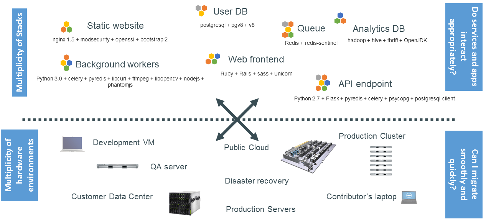
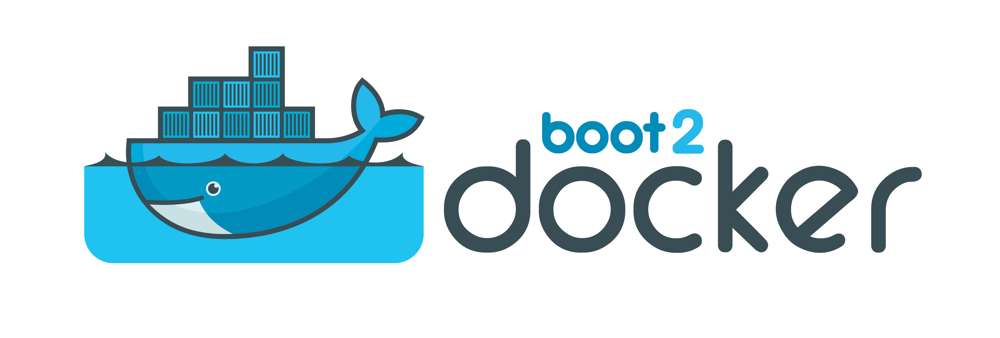
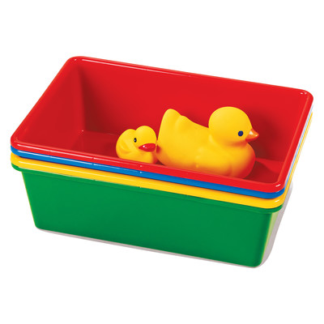
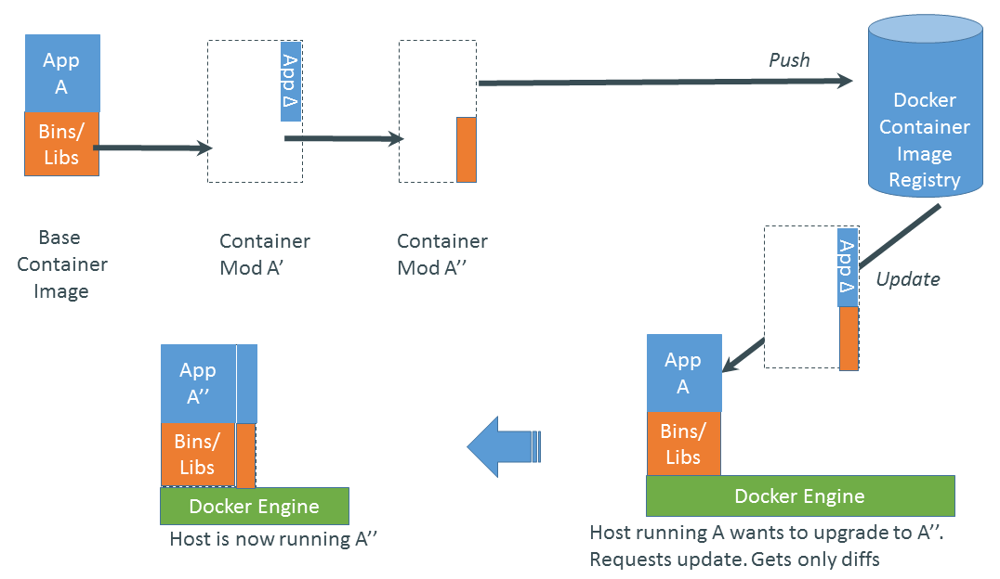
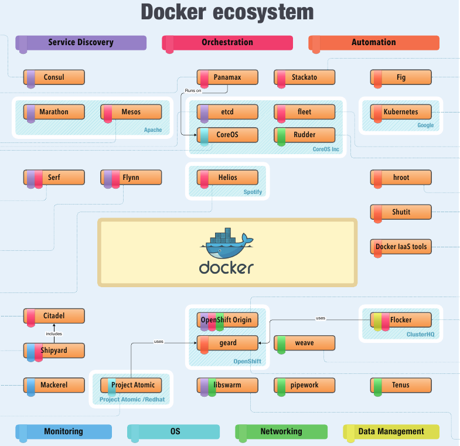
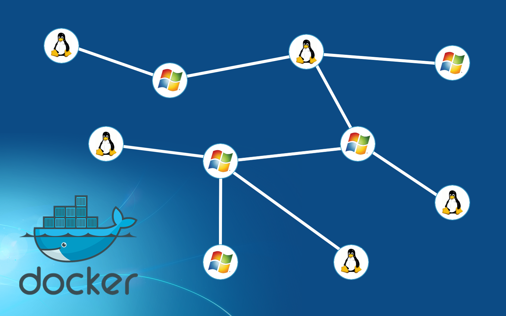

Docker

Dalla sua nascita nel Marzo 2013
- >27.600 commits
- >35.400 github stars
- >1.507 contributors
- >circa mille progetti basati su docker
- UIs, mini-PaaS, Remote Desktop...
- 460K applicazioni Dockerizzate, con una crescita del 3100% negli ultimi due anni
- Memcached, Redis, Node.js, Hadoop...
- Integrazione con Jenkins, Travis, Chef, Puppet, Vagrant and OpenStack
- Centinaia di meetup nel mondo…
- Ebay, Cloudflare, Yandex, and Rackspace utilizzano Docker ogni giorno
Docker... il cuore
- Scritto sulla base del container engine di dotCloud
- Versione originale: python
- Versione attuale: C/Go
- Demone Docker in background
- Gestisce container, immagini, build
- HTTP API
- CLI
- Open Source (GitHub)
Il problema:

Dove lo metto?

Il Trasporto Merci Pre-1960

Stessa situazione

Un container per domarli ...

Docker è un code-container

Elimina il problema alla radice

Prima Reazione

Un problema
Some packages could not be installed. This may mean that you have
requested an impossible situation or if you are using the unstable
distribution that some required packages have not yet been created
or been moved out of Incoming.
The following information may help to resolve the situation:
The following packages have unmet dependencies:
package1 : Depends: package2 (>= 1.8) but 1.7.5-1ubuntu1 is to be installed
E: Unable to correct problems, you have held broken packages.La soluzione
sudo add-apt-repository ppa:package2Sbagliato!
Un container per lo sviluppatore
Dentro il container:
- Il mio codice
- Le mie librerie
- Il mio gestore di pacchetti
- La mia applicazione
- I miei dati
Lo sviluppatore felice
- Un ambiente isolato, sicuro e scalabile per le vostre applicazioni
- Basta problemi di dipendenze, pacchetti o altri punti di rottura nelle fasi di deply
- Eseguire ogni applicazione nel suo container isolato, tante versioni di librerie o dipendenze
- Automatizzare testing, integration, packaging...tutto si può scrivere in uno script (del VOSTRO linguaggio)
- Per tutti i linguaggi e OS
- Reazioni istantanee di stop/start/snapshot di un servizio, altro che VMs!
- Più tempo per scrivere buon codice!
Un container per l'amministratore
Fuori dal container:
- Logging
- Remote access
- Network configuration
- Monitoring
L'amministratore felice
- Ogni distro/cloud/server
- Un ciclo di vita efficente, replicabile e comodo da gestire
- Codice migliore = meno lavoro di mantenimento
- Eliminare risorse inutili e differenze tra ambienti di dev/test/prod
- Continuous deployment and continuous integration systems
- Un container si adatta ogni momento, le VMs sono per sempre
Installare Docker
Installazione di Docker
Obiettivi
Al termine dell'installazione saprete:
- Come installare Docker
- Quando utilizzare
sudonell'esecuzione dei comandi Docker
Installazione di Docker
Docker è facile da installare.
Può essere installato su:
- Una grande varità di distribuzioni Linux
- OSX attraverso una macchina virtuale
- Microsoft Windows attraverso una macchina virtuale
Installazione di Docker in OSX e Microsoft Windows
Docker non gira nativamente in OSX e Microsoft Windows.
Ci sono tre modi per installare Docker in OSX e Microsoft Windows:
- Utilizzare Docker Mac o Docker Windows (raccomandato)
- Utilizzare la Docker Toolbox (precdentemente raccomandato)
- Installare tutto manualmente in una macchina virtuale (VirtualBox ecc.)
Lanciare Docker in OSX e Windows
Quando si esegue docker version da un terminale:
- la CLI si connette al Docker Engine attraverso un socket standard,
- il Docker Engine in realtà sta girando in una macchina virtuale,
- ... ma la CLI non lo sa e non le interessa,
- la CLI invia una richiesta attraverso l'API REST,
- il Docker Engine nella VM processa la richiesta,
- la CLI riceve la risposta e la mostra nel terminale.
Tutte le comunicazioni con il Docker Engine avvengono attraverso l'API.
Questo consentirà anche l'utilizzo di Engine remoti esattamente come se fossero locali.
Installazione manuale ...
WHY?
In ogni caso non è molto difficile la procedura comporta due step:
- Installare un sistema per la virtualizzazione
- Installare docker tramite un package manager
Utilizzare la Docker Toolbox
La Docker Toolbox installa i seguenti componenti:
- VirtualBox + Boot2Docker VM image (Docker Engine)
- Kitematic GUI
- Docker CLI
- Docker Machine\
- Docker Compose
- Una serie di utili wrapper
Boot2Docker ... WHAT'S BOOT2DOCKER???
E' una immagine VM molto piccola (~30MB).
Funziona sulla maggio parte degli hypervisors e può essere lanciata direttamente anche dal metal.
Boot2Docker non è una versione "lite" di Docker

Docker OSX e Docker Windows
- Docker Mac e Docker Windows sono i prodotti più recenti
- Consentono di far partire Docker senza VirtualBox
- Sono installati come normali applicazioni (pensate a una cosa tipo QEMU ma più veloce)
- Forniscono una migliore integrazione con le VPN enterprise
- Supportano la condivisione del filesystem attraverso i volumi
- la CLI riceve la risposta e la mostra nel terminale.
L'unico limite attuale è che può essere lanciata una sola istanza alla volta quindi se si vuole creare un cluster su una sola macchina è necessario utilizzare Docker Toolbox. I due strumenti possono essere installati insieme coesistendo in pace e prosperità ;)
Take some SUDO with you!
Caveat importanti sulla sicurezza
L'utente docker è l'equivalente dell'utente root
Fornisce un accesso di livello root all'host
E' necessario quindi proteggerl come si protegge l'utenteroot
Se date a qualcuno accesso all'API docker gli state dando accesso completo alla macchina
Per questo il socket per controllare Docker è di default di proprietà del gruppo docker
per evitrare accesso non autorizzato in macchine multi utente
Se il vostro utente non è nel gruppo docker dovrete utilizzare sudo
davanti ad ogni comando es. sudo docker version
I nostri primi containers

I nostri primi containers
Obiettivi
Al termine di questa parte del corso avrete:
- Visto Docker in azione.
- Avrete fatto partire i vostri primi containers.
Architettura di Docker
Docker è un'applicazione client-server.
- Il Docker Engine (o "daemon") riceve e processa tutte le chiamate effettuate all'API
- Il Docker client
Parla con il demone Docker attraverso l'API Docker.
Utilizzeremo principalmente la CLI embedded nel binario
docker - Docker Hub Registry Collezione di immagini pubbliche. Il demone Docker parla con l'hub attraverso l'API del registry.
Hello World
Nel vostro ambiente Docker eseguite questo comando:
$ docker run busybox echo hello world
hello world
Il nostro primo container!
- Abbiamo utilizzato una delle immagini più piccole e semplici:
busybox busyboxviene di solito utilizzata per sistemi embedded (telefoni, router ecc.)- Abbiamo lanciato un solo processo e stampato
hello world
Un container più utile
Eseguiamo ora un container un po' più interessante:
$ docker run -it ubuntu
root@04c0bb0a6c07:/#
- Un container nuovo di zecca.
- Esegue una versione minimale del sistema
ubuntu. -itè un'abbreviazione per-i -t.-idice a Docker di connetterci alla stdin del container.-tdice a Docker che vogliamo uno pseudo terminale.
Facciamo qualcosa nel nostro container
Proviamo ad eseguire il comando figlet nel nostro container.
root@04c0bb0a6c07:/# figlet hello
bash: figlet: command not found
Sembra che dobbiamo installare figlet.
Un'osservazione
Vediamo quanti pacchetti abbiamo installati nel nostro container:
root@04c0bb0a6c07:/# dpkg -l | wc -l
103
dpkg -lelenca tutti i pacchetti installati nel nostro containerwc -lli conta.- Se avete a disposizione una macchina Debian o Ubuntu potete fare un confronto.
Installare un package nei nostri container
Vogliamo figlet, quindi installiamocelo!
root@04c0bb0a6c07:/# apt-get update
...
Fetched 1514 kB in 14s (103 kB/s)
Reading package lists... Done
root@04c0bb0a6c07:/# apt-get install figlet
Reading package lists... Done
...
Tra un minuto figlet sarà installato!
root@04c0bb0a6c07:/# figlet hello
_ _ _
| |__ ___| | | ___
| '_ \ / _ \ | |/ _ \
| | | | __/ | | (_) |
|_| |_|\___|_|_|\___/
Uscire da un container
E' sufficiente uscire dalla shell come fareste da una qualsiasi shell
(es. con ^D o exit)
root@04c0bb0a6c07:/# exit
- Il nostro container è ora nello stato stopped.
- Esiste ancora nel disco ma tutte le sue risorse di calcolo sono state rese disponibili.
Eseguire un altro container
Cosa succede se facciamo partire un nuovo container e cerchiamo di eseguirci figlet?
docker run -it ubuntu
root@b13c164401fb:/# figlet
bash: figlet: command not found
- Abbiamo lanciato un nuovo container
- Abbiamo utilizzato l'immagine base di Ubuntu e
figletnon è installato. - A breve vedremo come preparare un'immagine customizzata che contenga
figlet
Background containers
Background containers
Obiettivi
I nostri primi container erano interattivi.
Ora vedremo come:
- Eseguire un container non interattivo.
- Eseguire un container nel background.
- Elencare i container in esecuzione.
- Controllare i log dei container.
- Arrestare un container.
- Elencare i container arrestati.
Un container non interattivo
Eseguiremo un piccolo container personalizzato.
Il suo unico task è quello di mostrare il tempo ogni secondo.
docker run jpetazzo/clock
Sun Oct 02 00:28:53 UTC 2016
Sun Oct 02 00:28:54 UTC 2016
Sun Oct 02 00:28:55 UTC 2016
...
- Questo container continua la sua esecuzione in eterno!
- Per arrestarlo digitate:
^C. - Docker ha scaricato automaticamente l'immagine jpetazzo/clock.
- Questa immagine è un'immagine utente creata dall'utente
jpetazzo. - Parleremo più diffusamente di immagini utente (e altri tipi di immagine).
Eseguire un container in background
I container possono essere eseguiti in background attraverso il flag -d (daemon mode).
docker run -d jpetazzo/clock
47d677dcfba4277c6cc68fcaa51f932b544cab1a187c853b7d0caf4e8debe5ad
- Non vediamo l'output del container.
- Ma non c'è motivo di preoccuparsi, Docker lo fa per noi inserendolo nei log.
- Docker ci fornisce l'ID del container.
Elencare i container in esecuzione
Come possiamo controllare se il nostro container è ancora in esecuzione?
Il comando docker ps, in maniera speculare al comando ps in UNIX, elenca i processi in esecuzione.
docker ps
CONTAINER ID IMAGE ... CREATED STATUS ...
47d677dcfba4 jpetazzo/clock ... 2 minutes ago Up 2 minutes ...
Docker ci fornisce:
- L'ID (troncato) del nostro container.
- L'immagine utilizzata per eseguire il container.
- L'uptime del nostro container.
- Altre informazioni (COMMAND, PORTS, NAME) che spiegheremo più avanti.
Lanciamo un altro po' di container
Lanciate un altro po' di container
docker run -d jpetazzo/clock
57ad9bdfc06bb4407c47220cf59ce21585dce9a1298d7a67488359aeaea8ae2a
docker run -d jpetazzo/clock
068cc994ffd0190bbe025ba74e4c0771a5d8f14734af772ddee8dc1aaf20567d
Controllate che docker ps elenchi tutti i container che avete eseguito.
Due flag utili per il comando docker ps
Per visualizzare solamente l'ultimo container eseguito:
$ docker ps -l
CONTAINER ID IMAGE ... CREATED STATUS ...
068cc994ffd0 jpetazzo/clock ... 2 minutes ago Up 2 minutes ...
Per elencare solamente gli ID dei container:
$ docker ps -q
068cc994ffd0
57ad9bdfc06b
47d677dcfba4
Combinando i due flag si ottiene l'ID dell'ultimo container
$ docker ps -lq
068cc994ffd0
Visualizzare i log di un container
Abbiamo detto che Docker logga tutto l'output di un container.
Vediamo se è vero.
$ docker logs 65ca
Sun Oct 2 09:07:52 UTC 2016
Sun Oct 2 09:07:53 UTC 2016
Sun Oct 2 09:07:54 UTC 2016
...
- Abbiamo specificato un prefisso dll'ID completo del container
- Naturalmente è possibile specificare l'intero ID
- Il comando
logsmostra tutti i log del container per intero (talvolta è un po' eccessivo quindi vediamo come risolvere questo problema.)
Visualizzare solamente la coda dei log (tail)
Per evitare di essere spammati con vagonate di pagine di log possiamo utilizzare l'opzione --tail:
$ docker logs --tail 3 65ca
Sun Oct 2 09:09:27 UTC 2016
Sun Oct 2 09:09:28 UTC 2016
Sun Oct 2 09:09:29 UTC 2016
- Il parametro rappresenta il nomero di linee che vogliamo visualizzare.
Seguire i log in tempo reale
Esattamente come il comando UNIX tail -f, possiamo seguire i log del nostro container:
$ docker logs --tail 1 --follow 65ca
Sun Oct 2 09:13:36 UTC 2016
Sun Oct 2 09:13:37 UTC 2016
Sun Oct 2 09:13:38 UTC 2016
Sun Oct 2 09:13:39 UTC 2016
^C
- Questo comando mostrerà l'ultima linea del file di log.
- Quindi continuerà a mostrare i log in tempo reale.
- Per uscire è sufficiente utilizzare
^C
Arrestare i container
Ci sono due vie per arrestare l'esecuzione del nostri container che girano in background:
- Ucciderli con il comando
docker kill. - Arrestarli con il comando
docker stop.
Il primo arresta il container immediatamente utilizzando il segnale KILL.
Il secondo è meno brutale. Invia un segnale TERM e attende 10 secondi, se dopo questo tempo il container
non è ancora arrestato invia un segnale KILL.
RICORDA: il segnale KILL non può essere intercettato e terminerà il container in modo forzoso.
Arrestiamo i nostri container
Arrestiamo uno dei nostri container:
$ docker stop 65ca
65ca
Questa operazione impiegherà 10 secondi:
- Docker invia il segnale
TERM; - il container non reagirà a questo segnale (è un semplice script di Shell senza alcuna logica per gestire i segnali),
- dopo 10 secondi visto che il container non si è arrestato Docker invierà il segnale
KILL; - questo termina il container.
Uccidiamo tutti gli altri container
Utilizziamo la forza bruta con gli altri due container rimasi:
$ docker kill 0f5e c14a
0f5e
c14a
Sia il comando stop che kill possono avere come argomenti più ID di container.
I container indicati verranno terminati immediatamente senza attendere i 10 secondi.
Verifichiamo che sia effettivamente così:
$ docker ps
Elenchiamo anche i container arrestati
Possiamo elencare anche i container arrestati utilizzando l'opzione -a (--all)
$ docker ps -a
CONTAINER ID IMAGE ... CREATED STATUS
c14a27fb3955 jpetazzo/clock ... 18 minutes ago Exited (137) Less than a second ago
0f5ef5632456 jpetazzo/clock ... 18 minutes ago Exited (137) Less than a second ago
65ca9dc7fc9f jpetazzo/clock ... 11 hours ago Exited (137) Less than a second ago
989976a9bece ubuntu ... 13 hours ago Exited (0) 12 hours ago
Far ripartire e "attaccarsi" ad un container
Far ripartire e agganciarsi ad un container
Obiettivi
Abbiamo lanciato i container in foreground e in background.
Ora vedremo come:
- Inviare un container in background.
- Agganciarsi ad un container che gira in background per riportarlo in foreground.
- Far ripartire un container arrestato.
Backgroud e Foreground
La distinzione tra background e foreground è opinabile.
Dal punto di vista di Docker tutti i container sono creati uguali.
Tutti i container vengono eseguiti alla stessa maniera, sia che vi sia un client agganciato ad essi o meno.
E' sempre possibile sganciarsi da un container e poi riagganciarvisi.
ANALOGIA: agganciarsi ad un container è come attaccare tastiera e schermo a un server fisico.
Sganciarsi da un container
- Se abbiamo fatto partire un container in modalità interattiva
ossia con l'opzione
-itpossiamo sganciarci da esso. - La sequenza di "sgancio" è
^P^Q - Altrimenti ci si può sganciare uccidnedo il client Docker
(ma NON attraverso
^C, pqerché in questo modo si invierebbe unSIGINTal container).
Quindi cosa significa esattamente -it
-tsignifica "alloca un terminale".-isignifica "connetti la stdin al terminale".
Sganciarsi da un container non interattivo
- ATTENZIONE: se il container non è stato lanviato con le opzoni
-it...- Non ci si potrà sganciare da esso con la sequenza
^P^Q - L'utilizzo del
^Cfarebbe proxare il comando al container e lo terminerebbe.
- Non ci si potrà sganciare da esso con la sequenza
- Ricordarsi: che è sempre possibile sganciarsi terminando il Docker Client.
Controllare l'output di un container
docker attachva utilizzato nel caso in cui si intenda fornire input al container- Se si vuole invece controllare solamente l'output di un container è meglio utilizzare
docker logs
$ docker logs --tail 1 --follow
Far ripartire un container
Quando un container è uscito si trova in stato di arresto.
Per farlo ripartire è sufficiente utilizzare il comando start
$ docker start
Il container verra fatto ripartire con le stesse opzioni con cui era stato eseguito originariamente.
Se si vuole interagire con esso ci si può riagganciare:
$ docker attach
Utilizzare il comando docker ps -a per identificare l'ID di un precedente container jpetazzo/clock
e fate alcune prove con questi comandi.
Agganciarsi ad una REPL
- REPL = Read, Eval, Print, Loop
- Tipicamente una shell
- Sintomo: esegui
docker attache non vedi nulla - La REPL non sa che ti sei agganciato e quindi non stampa nulla.
- Provare con la combinazione
^Lo con il tastoEnter
Ma cos'è un Linux container?

Pro
- Run everywhere
- Non è importante la distribuzione
- Non è importante la versione del kernel
- Run anything
- Se può essere eseguito nell'host, può girare nel container
- Se può essere eseguito sul kernel Linux, si può!
Dall'alto al basso
- High level: a lightweight VM
- Proprio process space
- Propria network interface
- È anche root
- Il suo /sbin/init (diverso dell'host)
- <<machine container>>
- Low level: chroot on steroids
- Può anche non avere il suo /sbin/init
- Container = isolated processes
- Condivide il kernel dell'host
- No device emulation
- <<application container>>
Containers systems
I soliti noti
- Linux
- OpenVZ
- LXC
- Libcontainer (Docker)
- Others
- Jail (FreeBSD)
- Zone (Solaris)
- App-V (Microsoft .NET)
Performance
- I processi sono isolati, ma vengono eseguiti sull'host
- CPU performance = native performance
- MEM performance = perdita di una micro % della performance rispetto all'host
- Network performance = native performance, ma dipendono dalla distribuzione dei container
VMs vs Containers

Come funziona un container Linux
- Namespace: isolamento dei processi
- PID
- User
- Network
- Cgroups: Resources management
- Copy-on-write Filesystem (AUFS)
- Linux Capabilities
- SElinux/Apparmor (stopdisablingselinux.com)
- Read-only mount point
(/sys /proc/sys /proc/sysrq-trigger /proc/irq /proc/bus)
Isolation with namespace
- pid
- mnt
- net
- uts
- ipc
- user
Isolation with cgroups
- memory
- cpu
- blkio
- devices
Copy-on-write storage
- union filesystem
(AUFS, overlayfs) - snapshot filesystem
(BTRFS, ZFS) - copy-on-write block devices
(snapshot con LVM o device-mapper)
Containers do not contain
"Docker is about running random code downloaded from the Internet and running it as root."
- Eseguire processi in un container NON è sicuro come in una VMs/KVM
- Scaricare immagini Docker casuali e lanciarle È COME eseguire codice casuale.
Best Practices
- Drop privileges
- Eseguire i servizi come non-root user
- Trattare root nel container come root nell'host
- Gestire le linux capabilities
(CAP_SYS_ADMIN) - Non eseguire codice inutile nel container
- SElinux/Apparmor
(http://stopdisablingselinux.com)Immagini Docker

Scrivere da run/commit
- docker run ubuntu bash
- apt-get install pacchetto1 lib1
- docker commit <containerid> >imagename>
- docker run <imagename> bash
- git clone... \ pip install\ etc
- docker commit <containerid> <imagename>
- docker commit <containerid> <imagename>
- docker tag <imagename> <user/image>
- docker push <user/image>
Scrivere un Dockerfile
FROM debian:wheezy
RUN apt-get update
RUN apt-get -y install ruby ruby-dev build-essential git libopenssl-ruby libxslt-dev libxml2-dev
RUN useradd banana -u 1000 -s /bin/bash --no-create-home
RUN gem install -n /usr/bin bundler
RUN gem install -n /usr/bin rake
WORKDIR /home/vidarh/
ENV HOME /home/vidarh
VOLUME ["/home"]
USER banana
EXPOSE 8080
Usare Docker Hub
Vantaggi:
- Registro remoto per le immagini
- Immagini ufficiali di docker/distro/app
- Download sicuro
- GitHub Account
- Comodo punto di partenza
Applicazioni

Lanciare un container
Docker run...
- Singolo comando
- Container in background
- Gestione dei volumi
- Velocissimo
Orchestration
- Linking container
container-a:container-b - Provisioning
salt, puppet, cloud ide, etc - Service discovery
- Dns/hostname
Ecosystem Support
- Operating systems
- Virtually any distribution with a 2.6.32+ kernel
- CoreOS—Small core OS purpose built with Docker
- OpenStack
- Docker integration into NOVA (& compatibility with Glance, Horizon, etc.) accepted for Havana release
- Private PaaS
- OpenShift, Solum (Rackspace, OpenStack), Other TBA
- Public PaaS
- Deis, Voxoz, Cocaine (Yandex), Baidu PaaS
- Public IaaS
- Native support in Rackspace, Digital Ocean,+++
- AMI (or equivalent) available for AWS & other
- DevOps Tools
- Integrations with Chef, Puppet, Jenkins, Travis, Salt, Ansible +++
- Orchestration tools
- Kubernetes, Mesos, Heat, ++
- Shipyard & others purpose built for Docker
- Applications
- 1000’s of Dockerized applications available at index.docker.io
Ecosystem (a colori!)

Senza dimenticare
Windows server...

Want to Learn More?
- www.docker.io
- Documentation
- Getting started (tutorial, installation, guide, etc)
- Introductory whitepaper
- Github: dotcloud/docker
- IRC: freenode #docker
- Google Group: docker-user
- Twitter: @docker
- Meetups: www.docker.io/meetups